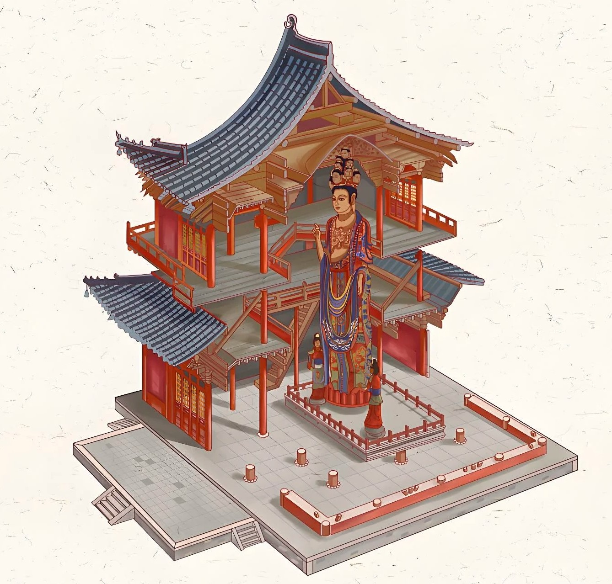

独乐三绝 · 辽代营造巅峰
山门之古、观音阁之奇、壁画之精，品读中华传统木构营造的巧夺天工

中国现存最早的庑殿顶山门
建筑形制：高约10米，面阔三间，进深两间，采用尊贵的单檐庑殿顶。正脊两端的琉璃鸱吻是中国古建筑屋顶原物保存至今最早的实例。
力士泥塑：山门内两侧分列两尊辽代彩色泥塑金刚力士（哼哈二将），肌肉虬结，衣带当风，是不可多得的辽代雕塑珍品。
严嵩题额：山门正中高悬“独乐寺”横匾，相传为明代严嵩亲笔所书，字迹苍劲有力，沉雄浑厚。
外观两层内部三层的千年防震奇迹
通高与立柱：阁通高23米，外观两层带平坐，内部实为三层。中间设立无底空筒井，以便容纳16米高的十一面观音像。
28根抗震柱网：柱子排列分为内外两圈（内圈12根，外圈16根），刚性的斗栱铺作层与柔性的柱架榫卯相咬合，经历唐山7.8级强震仅墙皮脱落，框架完好无损。
李白题额：阁上层高悬“观音之阁”巨匾，传为唐代大诗人李白登临时所书，笔力跌宕起伏。


140余平米元明壁画艺术长廊
题材丰富：壁画满布观音阁底层四壁，总面积达142.85平方米，绘制十六罗汉、四大天王与明王像，兼具佛教仪式与世俗风貌。
线条精妙：承袭吴道子“莼菜条”运笔传统，线条雄劲流畅，色泽历经数百年虽有剥蚀，但矿物矿彩依然古艳端严。
重现天日：1972年专家修复时揭去覆盖的后世灰泥，使这批隐匿百年的元明壁画真迹重新震撼世人。
千年历史沿革
独乐寺初建，因安禄山在此起兵反唐，思独乐而不与民同乐，故名独乐。
独乐寺始建。
大唐初创辽代名相萧太后之侄秦王耶律奴瓜主持重建山门与观音阁，成就千年国宝。
梁思成先生踏雪至蓟县考察，发表《蓟县独乐寺观音阁山门考》，向世界确立其学术价值。
被国务院公布为第一批全国重点文物保护单位（编号：古建筑及历史纪念建筑物第77号）。
营造密码 · 斗栱结构与刚柔力学
观音阁斗栱类型分布 (ECharts交互)
刚柔相济的弹塑性抗震体系
观音阁斗栱多达24种形态，犹如弹簧与减震阻尼器，在强烈震波中发生微小错动消耗地震能量，震后在自身重力作用下复位。
暗层平坐桁架加固
外观两层，实则在上层与下层之间巧妙设有一道暗层，柱头上施铺作层层叠垒，宛如现代高层建筑的刚性加强层。
侧脚与生起光学矫正
外围檐柱并非完全垂直，而是向内微倾（侧脚），角柱各向中心倾斜，同时转角柱逐渐升高（生起），使整座阁楼视觉上显得极其庄稳而无倾覆感。
📍 游览攻略与实用指南
门票：40元/人（学生/老人半价）
开放时间：08:00 - 17:30（17:00停止售票）
地址：天津市蓟州区武定街41号（渔阳古街西口）
火车：天津站乘市郊铁路S9线至蓟州北站；或北京站乘绿皮车直达蓟州站
自驾：津蓟高速直达蓟州收费站，约1.5小时
蓟州白塔寺（距独乐寺南约300米，辽代古塔）
盘山国家5A级风景名胜区（自驾约25分钟）